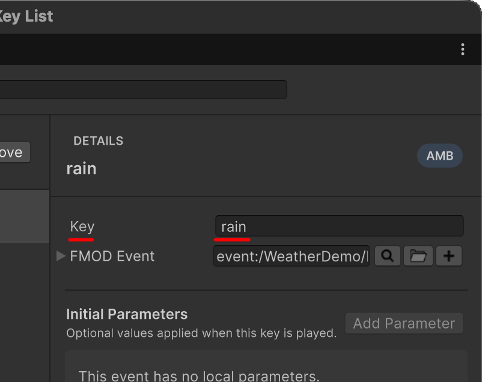
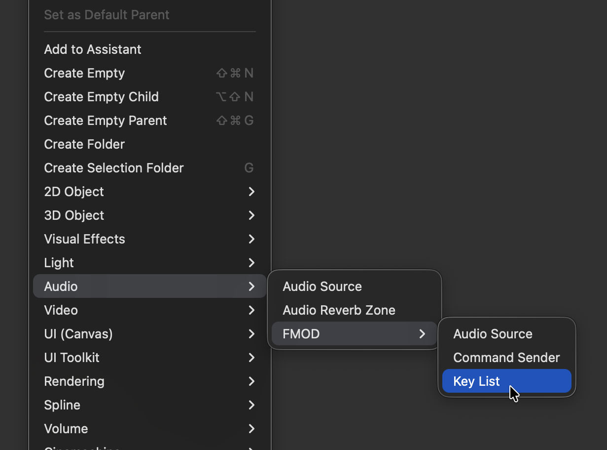
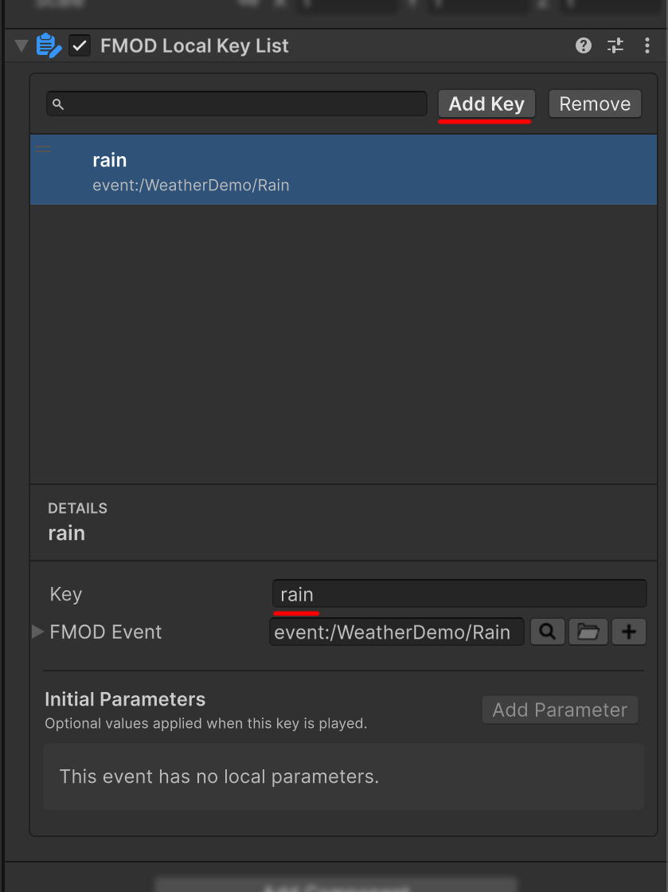

Global and Local Key Lists
A Key List associates a string Key with an FMOD Event and its initial Local Parameter values. Instead of repeating Event paths across components, you can reuse names such as Stage1, Battle, or Footstep.
Which Key List should you use?
| Type | Storage | Best suited for |
|---|---|---|
| Global Key List | Project Resources assets |
AMB, BGM, and SFX Events shared across Scenes |
LocalKeyList |
A Scene or Prefab GameObject | Events used only by one Scene, Prefab, or feature |
AMB, BGM, and SFX are categories for organizing Keys and selecting which list to query. Registering a Key under BGM does not automatically route its Event to a BGM Bus. Configure the actual Bus routing in FMOD Studio.
Create Global Key Lists
Select FMOD > FMOD Plus > Global Key List from the Unity menu.

When the window opens for the first time, it creates any missing assets at the following location:
Assets/FMOD Plus Data/Resources/
├── AMB-KeyList.asset
├── BGM-KeyList.asset
└── SFX-KeyList.asset
Select a category
Use the AMB, BGM, and SFX buttons at the top of the window to select the list to edit.
- AMB: Organizes ambient sounds.
- BGM: Organizes background music.
- SFX: Organizes sound effects.
The categories separate data only, so you can adapt their usage to your project's naming rules.
Add and edit a Key
- Select the category to edit.
- Select Add Key to create an entry.
- Set its Key name in the detail panel.
- Select the linked Event in FMOD Event.
- Add initial values under Initial Parameters when needed.

A new entry receives an available temporary name such as New Key or New Key (1). Rename it to describe its actual purpose.
The list displays each Key and Event path. Select an entry to edit its actual data in the detail panel. Changing the Event clears the existing Initial Parameters so values from the previous Event cannot be mixed with the new one.
Search
The search field looks for Key names across AMB, BGM, and SFX.
- It performs a substring search.
- Search is case-insensitive.
- Each result displays its original category.
- Drag reordering is disabled during a search to protect the source indices.
- Selecting a category button clears the search and returns to that category.
Important
Search is case-insensitive, but runtime Key lookup is case-sensitive. Stage1 and stage1 are different Keys.
Reorder and remove entries
When no search is active, drag entries to change their order within the current category. Remove Key displays a confirmation dialog before deleting the selected entry.
Adding, deleting, reordering, and editing Events or Parameters support Unity Undo/Redo. Modified Global assets are saved automatically.
Edit Initial Parameters
After selecting an Event, add its Local Parameters from Add Parameter. Select All to add every Parameter that is not already present.
The editor displays an appropriate input for each FMOD Parameter type.
| FMOD Parameter type | Editor control |
|---|---|
| Continuous | A floating-point Slider using the minimum and maximum range |
| Discrete | An integer Slider |
| Labeled | A Dropdown containing the FMOD labels |
These values are the initial values used when the Event is played through the Key. Removing a Parameter from the entry makes the Event use its FMOD default instead.
If an Event cannot be found in the loaded banks, or a stored Parameter was removed from the Event, the editor displays Parameter Not Found. It does not discard the serialized data automatically. Select a new Event or remove obsolete entries manually.
Create a Local Key List
Create a LocalKeyList in either of the following ways:
- Select GameObject > Audio > FMOD > Key List.
- On an existing GameObject, select FMOD Studio > FMOD Plus > FMOD Local Key List from Add Component.

The Local Key List Inspector uses the same basic workflow as the Global window.

- Select Add Key to add an entry.
- Set its Key name and FMOD Event.
- Add any required Initial Parameters.
- Search or drag entries to organize the list.
Search is limited to the current LocalKeyList, and reordering is disabled while searching. Editing a Scene Object marks the Scene as changed. Editing a Prefab is recorded as a Prefab Override. Undo/Redo is also supported.
Local Key List lookup API
LocalKeyList can resolve an Event, its Parameters, or both together.
using FMODPlus;
using FMODUnity;
using UnityEngine;
public class LocalMusicLookup : MonoBehaviour
{
[SerializeField] private LocalKeyList keyList;
[SerializeField] private FMODAudioSource audioSource;
public void Play(string key)
{
if (!keyList.TryGetEventAndParameters(
key,
out EventReference eventReference,
out ParamRef[] parameters))
{
Debug.LogWarning($"FMOD Key '{key}' was not found.");
return;
}
audioSource.clip = eventReference;
audioSource.ApplyParameter(parameters);
audioSource.Play();
}
}
| API | Result |
|---|---|
Count |
Number of serialized Key entries |
TryGetEvent() |
Event Reference |
TryGetParameters() |
Initial ParamRef[] |
TryGetEventAndParameters() |
Event and Parameters together |
On failure, the methods return false, the Event is its default value, and Parameters are an empty array.
Global Key List lookup API
Global lists use one Singleton per category.
using FMODPlus;
using FMODUnity;
using UnityEngine;
public class GlobalMusicLookup : MonoBehaviour
{
public bool TryGetMusic(
string key,
out EventReference eventReference,
out ParamRef[] parameters)
{
eventReference = default;
parameters = System.Array.Empty<ParamRef>();
return BGMKeyList.Instance.TryGetValue(key, out eventReference) &&
BGMKeyList.Instance.TryGetParamRef(key, out parameters);
}
}
AMBKeyList, BGMKeyList, and SFXKeyList provide the same lookup API.
TryGetValue()returns the Event.TryGetParamRef()returns its initial Parameters.TryFindClip(),TryFindParamRefs(), andTryFindClipAndParams()perform equivalent lookups and log an error when they fail.
Use the TryGet* methods when the caller should handle failure. Use the TryFind* methods when a missing Key must also be logged as an error. Global TryGetParamRef() can return null on failure, so check its Boolean result before using the array.
Use KeyReference
KeyReference packages a Global or Local list selection and its Key into one serializable value.
using FMODPlus;
using FMODUnity;
using UnityEngine;
public class KeyReferencePlayer : MonoBehaviour
{
[SerializeField] private KeyReference eventKey = new();
[SerializeField] private FMODAudioSource audioSource;
public void Play()
{
if (!eventKey.TryGetEventAndParameters(
out EventReference eventReference,
out ParamRef[] parameters))
{
Debug.LogWarning($"FMOD Key '{eventKey.Key}' was not found.");
return;
}
audioSource.clip = eventReference;
audioSource.ApplyParameter(parameters);
audioSource.Play();
}
}
TryGetEvent() resolves only the Event. TryGetEventAndParameters() also returns its initial values. Parameters are an empty array on failure, but always check the Boolean result before using them.